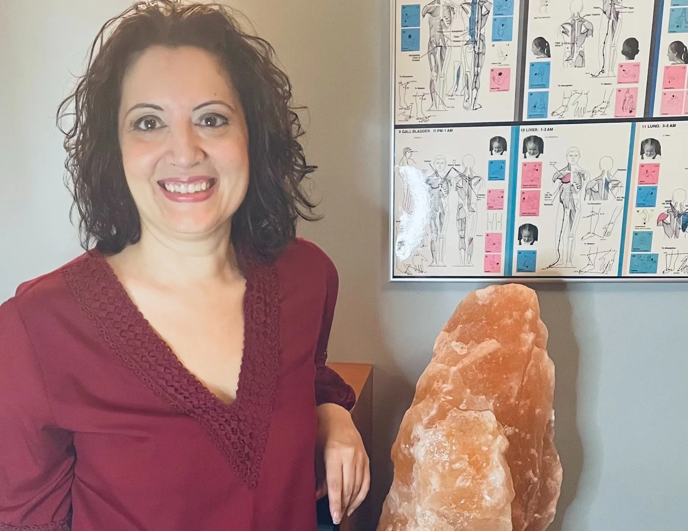

Reiki and Energy Healing
A gentle energy practice that supports relaxation, balance, and a felt sense of ease.
Explore Reiki and Energy HealingGrounded spiritual healing in Montclair, NJ and online
Grounded spiritual healing for people looking for calm, perspective, and a practical way forward.
Support that meets you where you are
Maybe something feels off, and you cannot quite name it. Maybe you know exactly what you are carrying. Maybe it is a demanding situation at work, a loss, or a decision you cannot seem to make. You are looking for support that meets you where you are, without asking you to explain or justify what you are feeling.
That is what we are here for. Enlightened Path Healing offers Reiki, Akashic Records readings, and meditation, along with support for workplace struggles, relationships, and other personal challenges for people who want real help, offered with care and without pressure.
Where would you like to start?
Burnout, grief, a hard transition, a difficult workplace experience, or a personal, physical, emotional, or spiritual issue you are seeking clarity on.
Explore services Something feels offA first conversation can help you find the right next step, with no pressure to commit to anything.
Request a Discovery Call I have done this work beforeIf you already have experience with Reiki or meditation, sessions can begin from what you already know.
See all services I like things explained plainlyNo unfamiliar jargon left unexplained and no promises we cannot back up.
Read about our approachWhat we offer
A gentle energy practice that supports relaxation, balance, and a felt sense of ease.
Explore Reiki and Energy HealingA reflective reading practice that draws on your soul's history to bring clarity to where you are now.
Explore Akashic RecordsGuided practice and practical tools for a calmer, steadier mind, individually or in groups.
Explore MeditationSupport for people carrying the weight of a difficult workplace experience.
Explore Work Trauma CoachingMindfulness and well-being programming for teams and organizations.
Explore Corporate Wellness
Meet the founder
Enlightened Path Healing was founded by Lisa Batitto, an intuitive Reiki Master and Teacher, Akashic Records Guide, Work Trauma Coach, and corporate mindfulness teacher who brings both spiritual training and a grounded, no-nonsense approach to her work.
Reviews
Local and virtual
Enlightened Path Healing is based in Montclair, New Jersey, and offers sessions both in person and virtually, so grounded support is within reach wherever you are.
View location and scheduling optionsQuestions before you begin
No. Curiosity is enough. We will explain what we are doing and why in plain language, every step of the way.
No. Our services are not a substitute for medical or mental health treatment. They are meant to complement the care you are already receiving.
Yes. Many clients work with us entirely online, and some combine virtual and in-person sessions.
Reiki is a gentle, complementary practice that promotes relaxation and supports overall well-being. It is not intended to diagnose, treat, cure, or prevent any medical or psychological condition and should not replace care from a licensed healthcare professional.
Begin with a session or ask for help choosing the right place to start.